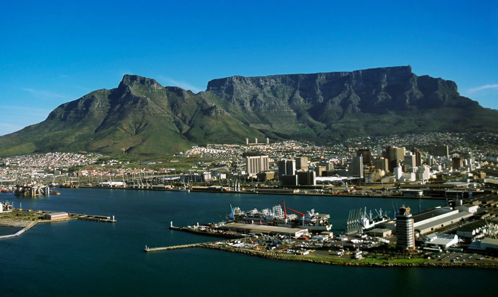

Visit Table Mountain for breathtaking views of the city and surrounding landscapes.
Explore the V&A Waterfront for shopping, dining, and entertainment.
Discover the rich history of Robben Island, where Nelson Mandela was imprisoned.
Go hiking in the Cape Winelands and enjoy scenic trails and vineyards.
Experience shark cage diving for an adrenaline-filled adventure.
Relax on the beautiful beaches of Clifton and Camps Bay.
Visit the District Six Museum to learn about the history of
Top Attractions
